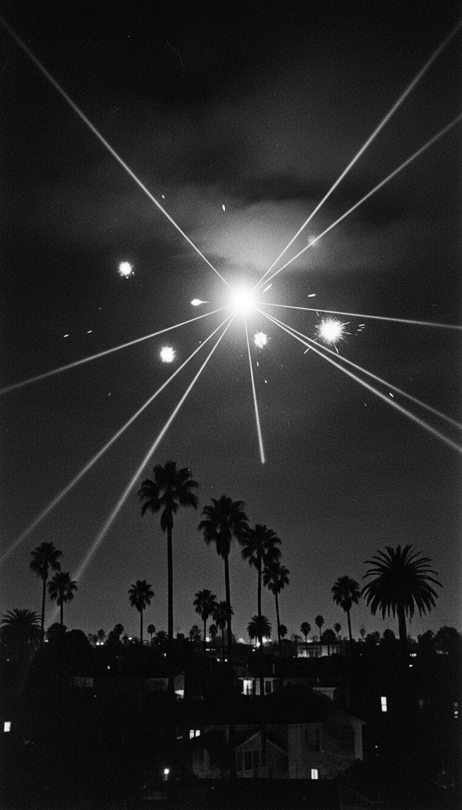

In the early hours of February 25, 1942, the United States Army fired more than 1,400 anti-aircraft shells at a single object holding position over Los Angeles, and when the guns finally went silent, the object was still in the sky.
This is not folklore. It is logged in the records of the Army's Western Defense Command, it ran on the front page of the Los Angeles Times on February 26, 1942, and it was argued over by two members of Roosevelt's cabinet within twelve hours of the last shot. Radar logged it. Searchlights held it. Cameras captured it. And eighty years later, the official file still contains two explanations that cannot both be true.

Two Forty in the Morning, February 25, 1942
The sequence is documented minute by minute. At 2:15 a.m., Army radar picked up an unidentified target roughly 120 miles west of Los Angeles, inbound. At 2:25 a.m., air raid sirens sounded and a total blackout was ordered across Los Angeles County. At 3:16 a.m., the 37th Coast Artillery Brigade opened fire with 12.8-pound anti-aircraft shells over Santa Monica and Culver City, and the batteries kept firing for nearly an hour. The all-clear did not come until 7:21 a.m. This was not a jumpy sentry squeezing off a few rounds at a cloud. This was a coordinated, sustained barrage by trained coastal defense crews, directed at something their instruments told them was there.
The Photograph the Times Put on Page One
On February 26, the Los Angeles Times published a photograph taken during the barrage. It shows multiple searchlight beams converging on a single point in the sky over Culver City, with shell bursts flowering around it. Searchlight operators were trained to track aircraft moving at hundreds of miles per hour. That night, the beams did not sweep and hunt. They locked, and they held, because the thing they were pointed at was not going anywhere. The convergence point in that photograph is the whole case in one image: a solid, stationary something, sitting inside a cone of light and fire over an American city.
Two Cabinet Secretaries, Two Stories, One Day
Within hours, Washington produced its explanations. Both of them. Secretary of the Navy Frank Knox told a press conference on February 25 that the entire event was a false alarm brought on by war nerves. That same day, Secretary of War Henry Stimson stated that as many as fifteen aircraft had been over the city, flown at varying speeds and altitudes. Read those again. The Navy said nothing was there. The Army said fifteen aircraft were there. Issued the same day, about the same event, by the two men running the American war machine. Then the third shoe dropped after the war: Japan's military stated it flew no aircraft over Los Angeles that night. The government's own list of suspects eliminated itself. Nothing was there, fifteen planes were there, and the only enemy with planes says none of them were theirs.
What Came Down, and What Did Not
Here is the ledger from that night. Shells fired: more than 1,400. Enemy aircraft shot down: zero. Wreckage recovered: none. Bombs dropped on the city: none. What did come down was American steel. Shell fragments rained across Los Angeles, punching holes in homes and streets from Santa Monica to Long Beach. Five people died on the ground that night, three in car crashes during the blackout and two from heart attacks. The only damage inflicted in the Battle of Los Angeles was inflicted by the guns defending it. Whatever they were shooting at contributed nothing to the casualty list, because whatever they were shooting at did not need to.
A balloon does not absorb an hour of anti-aircraft fire, hold its position inside the searchlights, and then leave at its own pace.
The Balloon Story Breaks on Contact
In 1983, the Office of Air Force History settled on its final answer: meteorological balloons. Hold that answer up against the record and watch it come apart. A weather balloon is a skin of rubberized fabric. One shrapnel burst within fifty yards shreds it, and the 37th Coast Artillery put over 1,400 bursts into that patch of sky. A balloon drifts wherever the wind sends it, yet the searchlight crews held a fixed convergence for an extended period, and witnesses across the basin described the object moving deliberately from the Santa Monica area south toward Long Beach before heading out to sea. Gunners from the coastal batteries said for decades afterward that the object took direct hits and kept moving. The 1983 explanation asks you to believe that trained artillery crews fired 1,400 shells at a balloon for an hour and never popped it. The gunners who were actually behind the guns never believed that, and they were the ones looking down the barrels.
The War Nerves Argument Cuts the Other Way
The strongest card the false-alarm camp holds is timing. Two nights earlier, on February 23, 1942, the Japanese submarine I-17 surfaced off Santa Barbara and shelled the Ellwood oil field. The coast was on edge, so the story goes, and jumpy men saw an enemy that was not there. Except war nerves do not paint a target on a radar scope 120 miles offshore. The radar contact came first, at 2:15 a.m., before a single siren sounded and before a single nervous civilian looked up. The sequence ran instruments first, humans second. And the Ellwood attack cuts the other way entirely: it proves the defenses of the California coast were on maximum alert, manned by crews primed to identify enemy aircraft. Those crews, at their sharpest, tracked and fired on something for an hour and could not bring it down or name it. Alert men with working radar are not the profile of a hallucination. They are the profile of witnesses.
So close the ledger on February 25, 1942. An object was tracked inbound by military radar, held by searchlights over an American city, and fired on for an hour by the United States Army. It absorbed the barrage, moved off toward the ocean under its own control, and left behind no wreckage, no identification, and two official explanations that contradict each other on the same calendar day. The file was never resolved. It was managed.
Something sat over Los Angeles that night while the most heavily defended coastline in America emptied its guns at it, and it left when it chose to. The Army could not name it in 1942 and the Air Force could not name it in 1983. So you tell me what holds still under 1,400 shells. Drop your theory below.
Before you go
7 books the Vatican doesn't want you reading. Free PDF, the texts they cut, with sources. Joined by 140+ Inner Circle members.
No spam. Unsubscribe anytime.
Go deeper
The Hidden Canon, Vol. I, Enoch. Jubilees. Thomas. Mary. Judas. 90 pages, 14 chapters, every receipt cited. The books your Bible quietly removed.
Read the Canon →Books that informed this investigation
As an Amazon Associate, Hidden Epoch earns from qualifying purchases. Cost to you: nothing.
Research safely
The VPN we use to research without being tracked. First 3 months free.
Get NordVPN →